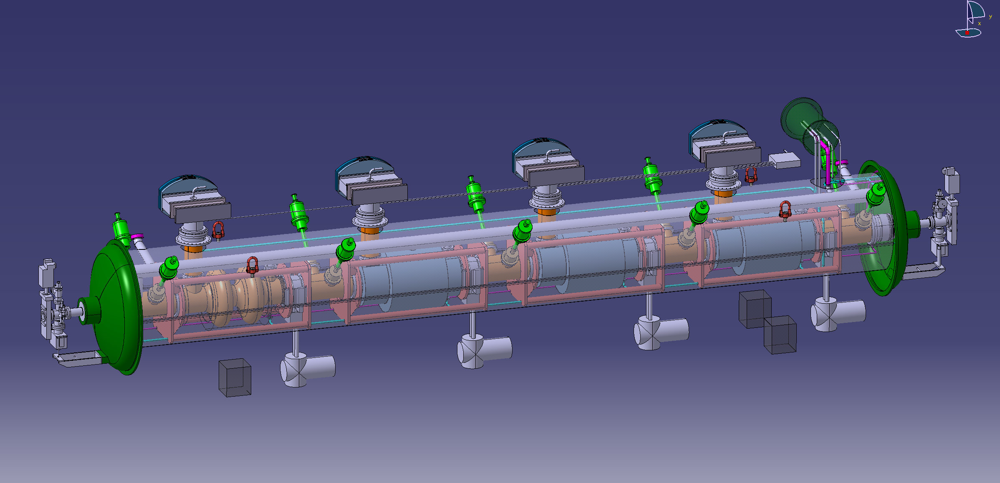
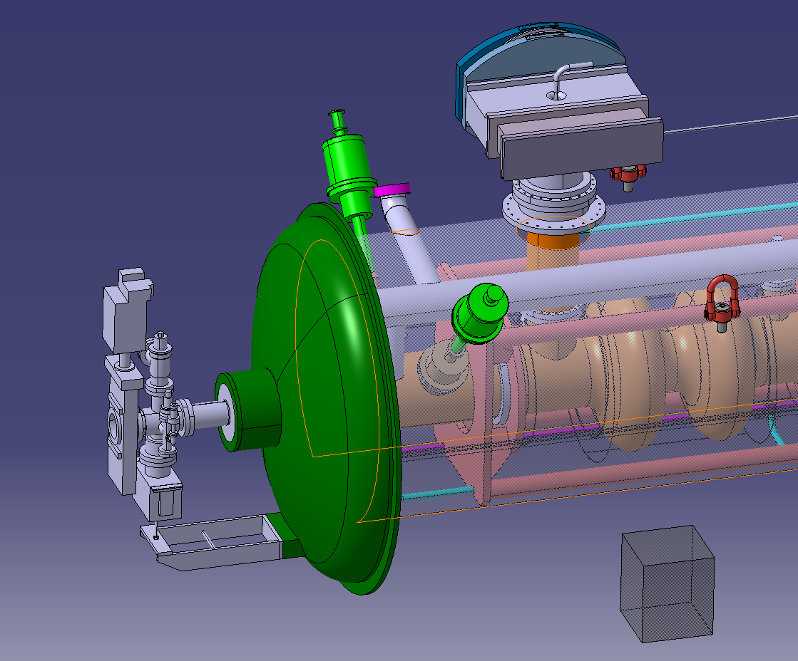

Maximum Credible Incident (MCI) Analysis
As part of my work in the cryogenics group at CERN, I analyzed the behavior of the FCC-ee superconducting radiofrequency cryomodules during a Maximum Credible Incident. The MCI for these cryomodules is a sudden loss of insulation vacuum: air rushes into the vacuum space, condenses on the cold surfaces, and deposits an extreme heat flux into the helium bath. The helium boils off far faster than in normal operation, and this flow must be vented safely through the relief system — the risers, the bi-phase tube, and the burst disk line — without the pressure inside the cryomodule ever exceeding what the vessel can withstand.

- The venting mass flow is calculated following the EN 17527 cryogenic safety standard, applying the standard's heat flux for a loss of insulation vacuum over the cold surface area of the cavities
- The heat load is converted into a boil-off mass flow using the latent heat of helium at the discharge conditions, with helium properties evaluated using HEPAK
- The total pressure drop along the relief path is the sum of major losses (wall friction along the pipes) and minor losses (tees, bends, contractions, and exits, using K values from Idelchik)
- The design goal is to keep the total pressure difference during the MCI below 10% of the starting pressure, so the burst disks can protect the cryomodule reliably

- Four different routing options for the burst disk line were compared, trading off flow velocity, heat inleaks, and the K values of the tee connections in each arrangement
- The analysis showed that minor losses dominate the total pressure drop — the tees and bends matter more than pipe friction
- Increasing the riser and burst disk line diameters roughly halved the total pressure drop, thanks to the lower flow velocity and more favorable K values
- The study concluded with concrete design recommendations: larger relief line diameters, fewer tee bends, and smoother corners along the venting path